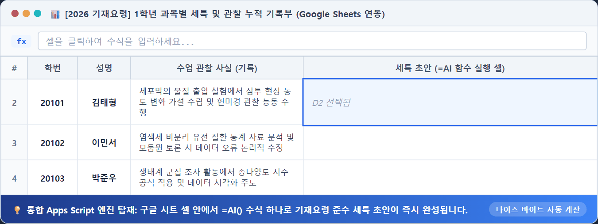
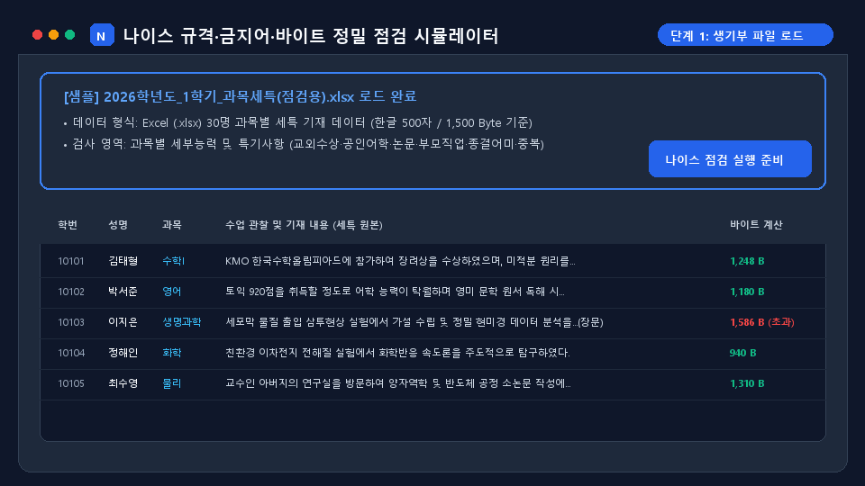

학생 기록 동기화 & 생기부 제약 점검
구글 시트 1:1 관계형 동기화부터 나이스 규격(바이트·금지어·어미) 일괄 점검과 대입 진학상담까지 한곳에서 관리합니다.
① 학생 종합 기록 & 구글 시트 1:1 동기화 Hub
30명 관계형 명부 및 단일 시트([_교무수첩]) 실시간 연동구글 시트에서 =AI() 수식 하나로 세특·행특 3초 만에 완성하기
복잡한 프롬프트를 매 셀마다 쓸 필요 없이, 지침 셀(B2)과 학생 데이터 범위(F2:I2)만 연결하면 나이스 9대 규격 문단이 1초 만에 자동 완성됩니다.
• 방식 ① 수식 삽입: 시트 상단 병합 셀에
=IMAGE("https://neis-help-one.vercel.app/assets/ai_sheet_guide_infographic.png", 1) 입력• 방식 ② 움직이는 GIF 삽입:
=IMAGE("https://neis-help-one.vercel.app/assets/ai_formula_demo.gif", 1) 입력 시 셀 안에서 실시간 애니메이션 루프 재생

[교사용 올인원] 마스터 통합 구글 시트 (10개 탭 유기적 연동)
학생 명렬표(학번·성명) 1회 입력으로 창체·행특·교과세특·대입상담·상담기록·모바일교무수첩(출결·칭찬·1인1역·수업관찰)이 하나의 시트 안에서 유기적으로 연결되며, 중앙 대시보드와 각 탭 간 양방향 바로가기 및 표 접기/펼치기를 지원합니다.
=AI_SETUK(), =AI_HAENGTEUK(), =AI() 수식으로 자동 생성되는 초안 칸
[대시보드로 이동] 링크 및 행·열 머리글의 [+]/[-] 접기 버튼 지원
[교사용 올인원] 생기부·진학상담·교과세특·모바일교무수첩(출결·칭찬·역할) 통합 마스터 표준시트
시트가 여러 개로 나뉘어 혼란스러울 필요 없이, 하나의 마스터 시트 안에서 10개 탭이 학번 하나로 유기적으로 연계됩니다. 가장 먼저 보는 0_사용안내와 1_대시보드에서 각 시트로 즉시 이동하고, 각 탭에서도 언제든 중앙 대시보드로 복귀할 수 있습니다.
•
0_사용안내 (가장 먼저 보는 사용법 · 색상 구분 · Apps Script 연결 안내) | 1_대시보드 (학생별 전 영역 완성도 점검 및 입력칸 바로가기)•
2_학생명렬표 [교사입력] (학번·성명·희망학과 1회 입력 기준표) | 3_창체_행특 [교사메모 + AI자동] (자율·동아리·진로·행특 초안)•
4_대입상담 [교사입력 + AI자동] (내신·수시 6지망 지원전략 · 4~6지망 열 접기 지원) | 5_상담기록 [교사입력] (일자별 상담 누적)•
6_수업관찰_기록 [교사/앱동기화] (단원별 수업관찰 누적) | 7_AI세특_작성 [AI자동 + 교사검수] (=AI_SETUK 과목별 세특 초안)•
8_출결_칭찬_기록 [교사/앱동기화] (모바일 교무수첩 출결·칭찬포인트·1인1역·생활관찰 동기화) | _스킬지침 (2026 나이스 기재요령 프롬프트 원문)
[실시간 대시보드 미리보기] 1_대시보드 학생별 기록 완성도 점검표 (클릭하여 표 접기 / 펼치기) 표 접기/펼치기 [+/-]
시트의 1_대시보드와 동일하게 학생별 창체·행특, 대입상담, 수업관찰, 출결·칭찬 기록 현황을 진단하고 클릭 즉시 작성 화면으로 불러옵니다.
[상세 연결 매뉴얼] 구글 시트 Apps Script 직접 연결 및 AI 에이전트(Gemini Pro · Antigravity · 비서 앱) 요청 6단계 가이드 (클릭하여 펼치기) 매뉴얼 펼치기/접기 [+/-]
구글 시트 & Apps Script 연결 6단계 캐러셀 설명서
상단의 [내 드라이브로 사본 만들기]를 클릭해 사본을 저장한 직후, 학생 개인정보를 입력하기 전에 먼저 Apps Script 연결을 진행하세요. 빈 양식에서 먼저 연결하면 AI 에이전트에게 도움을 요청할 때도 안전하며 모든 자동 수식이 처음부터 작동합니다.
사용법 · 검사 규칙
학교 업무 순서와 학생 개인정보 보호 원칙을 먼저 확인하고, 아래에서 상세 사용법과 검사 규칙을 열람하세요.
학교 업무 표준 흐름 및 학생 데이터 보호 원칙
수업 활동 메모 작성부터 AI 초안 도출, 나이스 엑셀·PDF 일괄 점검까지의 과정입니다.
관찰 메모에 학생 이름(예: ‘민수가’, ‘김철수는’)이 감지되면 즉시 마스킹을 안내하며, 개인 구독 채팅(Claude·ChatGPT) 사용 시 설정에서 ‘모델 개선에 사용’을 꺼 두시면 학습에 활용되지 않습니다.
④ 생기부 초안 작성 (AI 보조 도구)
2026 기재요령 준수 1500B 맞춤 세특 초안 생성생기부 초안 작성
수업 중 관찰한 활동 메모로 2026학년도 기재요령 기준 문단을 작성하고 바이트·금지 표현을 점검합니다. 2026 기재요령 기준
생기부 참고 예시 모음 및 세특 작성 가이드
과목별·영역별 우수 기재 사례를 먼저 확인하신 후, [초안 작성] 탭에서 AI 맞춤 문구를 생성하세요.
참고 예시 모음
과목 및 영역별 필터 지원내 금지어 및 허용 표현 관리
우리 학교나 과목에서 특별히 추가로 제한할 단어나 예외적으로 허용할 학술 표현을 등록하세요.
기재요령 핵심 규정 요약
올린 자료
Gemini API 키 및 모델 설정
비워 두면 기본 모델을 사용합니다.
구독형 AI 스킬 · 프로젝트 등록 방법
Gemini 스킬(Skills)로 저장해 쓰기
ChatGPT 프로젝트(Projects)에 저장해 쓰기
Claude 스킬(Skills)로 저장해 쓰기
Gemini API 키 발급 안내
1 항목 및 기본 정보
2 수업 관찰 메모 (구글 시트 연동)
성취기준 · 관찰한 특성 · 변화 · 참여도 더하기 (선택)
선택한 항목은 실제 관찰한 사실로 메모와 함께 반영됩니다.
학생 특성 변화 참여도소극적인 경우에도 노력한 부분이나 발전 가능성과 함께 서술하도록 안내합니다.
3 분량 · 역량 · 참고 예시 (선택)
대학 학생부종합전형 평가요소 · 참고 예시 고르기
4 초안 생성 및 스킬 내보내기
API 키가 이 브라우저에 저장되어 있습니다. 변경·삭제
현재 '과장 허용' 모드입니다
구독 중인 AI에 지침·스킬로 저장해 두기
ChatGPT 프로젝트에는 [지침만 복사], Claude·Gemini 스킬에는 [.zip / SKILL.md]를 등록해 두면 메모만 보내 바로 문단을 받을 수 있습니다.
프롬프트 복사
완성 문단 점검 결과
나이스 입력 전 최종 확인은 담당 교사가 직접 수행해 주세요.
② 나이스 규격·금지어·바이트 정밀 점검
1,500B 바이트 한도, 공인어학·경시대회 금지어, 종결어미, 중복문장 일괄 점검생기부 제약 점검: 금지어·바이트·어미·중복 실시간 검출
교외 수상·공인어학·소논문 금지어, 나이스 바이트 초과(1,500B), 종결어미 오류, 학생 간 복사 문장을 1초 만에 찾아냅니다.

[주의] 본 프로그램은 참고용 자료입니다. 내용의 오류나 누락이 있을 수 있으므로 최종 판단은 반드시 교사가 직접 확인해 주시기 바랍니다.
1 파일 열기 · 붙여넣기
엑셀 또는 PDF 파일을 여기에 끌어다 놓거나 클릭해서 선택하세요
.xlsx · .xls · .csv · .pdf — 여러 개를 한 번에 올릴 수 있습니다 · 파일은 이 컴퓨터를 벗어나지 않습니다
- 담임 전체점검학교생활기록부 → 학생부 조회 및 출력 → PDF 저장 후 업로드
- 교과·동아리 등 개별점검해당 항목 엑셀 파일 저장 후 업로드 (과목별 파일을 한꺼번에 올리면 과목을 가로지르는 복사·붙여넣기도 잡힙니다)
2 검사할 항목 확인
3 검사 결과
[주의] 본 프로그램은 참고용 자료입니다. 내용의 오류나 누락이 있을 수 있으므로 최종 판단은 반드시 교사가 직접 확인해 주시기 바랍니다.
⑥ AI 프롬프트 및 교사용 스킬 가이드
Gemini Gem / Claude Skill 복사 및 활용 안내AI 프롬프트 및 스킬 지침
ChatGPT 프로젝트 지침, Claude 스킬(.zip), Gemini 스킬(SKILL.md)로 등록해 두고 쓸 수 있는 2026 기재요령 영역별 표준 지침입니다.
구글 제미나이 젬스(Gems) 및 맞춤형 AI 전용 봇 활용법
무료 계정 지원스킬 압축파일(.zip)을 따로 다운로드받아 설치할 필요 없이, 아래에서 원하는 영역의 [지침 복사]를 누른 뒤 Google Gemini(gemini.google.com)의 [Gems]에 등록해 두면 나만의 1,500 Byte 준수 생기부 작성 봇이 완성됩니다!
아래 카드에서 원하는 영역(교과세특, 행특 등)의 [지침 복사] 버튼을 누릅니다.
Gemini 화면 좌측 [Gems 관리] → [새 Gem 만들기]를 누르고 복사한 지침을 붙여넣습니다.
이제 대화창에 학생의 수업 관찰 사실만 한 줄 적어주면 기재요령을 완벽 준수한 초안이 즉시 완성됩니다!
1 교과 세부능력 및 특기사항
수업·수행평가 관찰 사실, 성취기준에 따른 성취수준 특성, 학습활동 참여도와 성장을 500자(1,500 Byte) 이내로 구성합니다.
생기부 기재 지침 전문 펼쳐보기 (자동 줄바꿈)
2 행동특성 및 종합의견
1년 동안 지속 관찰한 행동특성, 인성, 발전 가능성을 구체적 행동 근거 중심으로 300자(900 Byte) 이내로 구성합니다.
생기부 기재 지침 전문 펼쳐보기 (자동 줄바꿈)
3 자율·자치활동
실제 맡은 역할과 활동 과정, 참여도·협력도·태도 변화를 500자(1,500 Byte) 이내로 서술합니다.
생기부 기재 지침 전문 펼쳐보기 (자동 줄바꿈)
4 동아리활동
부서명·이수시간 자동 표기 바이트를 고려하여 동아리 내 실제 활동과 역할을 서술합니다.
생기부 기재 지침 전문 펼쳐보기 (자동 줄바꿈)
5 진로활동
관심 분야와 진로 탐색·체험·상담 결과를 사실 위주로 500자(1,500 Byte) 이내로 서술합니다.
생기부 기재 지침 전문 펼쳐보기 (자동 줄바꿈)
6 학생 보고서·설문지 OCR 판독
교육용 계정 권장촬영된 학생 보고서/설문지에서 주제·동기·핵심대화를 정밀 판독하고 나이스 9대 규칙 세특 초안을 마크다운 표로 일괄 추출합니다.
⑦ 2026 나이스 기재요령 원문 검색 & 사용법
교육부 기재요령 원문 검색 및 상세 매뉴얼③ 2027 대입 진학상담 & 대학 전형 DB
133개 대학 전형 DB, 2028 5등급제 환산 및 수시 6지망 시뮬레이션내신 등급별 지원 가능 대학·전형 탐색 (5등급제 기준)
현재 고1 등 2028 개편 5등급제 대상 학생의 내신 등급을 기준으로 133개 대학 지원 가능권(안정·적정·소신)을 분석합니다.
| 대학명 | 계열 | 전형유형 | 전형명 | 2028 5등급제 (합격선 기준) | 9등급제 (전년도 참고) | 수시 6장 담기 |
|---|
학생들이 가장 많이 찾는 대학별 공식 입결 공시 사이트 및 논술 기출문제·채점기준 다운로드 공식 출처입니다.
2027 전국 49개 대학 논술전형 총정리 (pp.175~176 원본 데이터)
모집인원, 전형방법(논술 비중), 수능최저학력기준 적용 여부를 한눈에 비교합니다.
| 대학명 | 전형명 | 모집인원 | 전형방법 | 수능최저 | 선행학습 영향평가 | 입학처 & 어디가 | 수시 6장 담기 |
|---|
| 학번 | 이름 | 희망학과 | 5등급제(기준) | 9등급(참고) | 모의고사(최저) | 수시 1~3지망 | 수시 4~6지망 | 담임상담의견 | 세특관찰기록 | Docs일지 | 상태 | 수정 |
|---|
구글 시트 복사 & Apps Script 연동 스크린샷 완벽 매뉴얼
시트 복사부터 에디터 열기, 코드 붙여넣기, 최초 1회 Google 계정 승인(고급허용), URL 복사까지 실제 화면으로 안내합니다.

1단계: 관계형 구글 시트 마스터 템플릿 사본 만들기
1 / 6상단의 [시트 사본 만들기] 버튼을 누르면 선생님 본인의 개인 Google 드라이브로 복사됩니다. 학생 정보는 외부 서버가 아닌 선생님 개인 드라이브에만 안전하게 보관됩니다.
진학자료 보안 및 시스템 설정
교사용 비밀번호(PIN), Cloudflare R2 원본 스캔본 저장소 및 구글 시트 마스터 연동 주소를 설정합니다.
선생님의 구글 시트에 [사용자승인] 탭이 자동 생성되며, 승인 신청 교사의 성명·학교·이메일이 기록됩니다. 시트에서 상태를 '승인'으로 변경하시면 교사가 즉시 로그인할 수 있습니다.
⑤ 모바일 교무수첩 (독립 새 창 실행) ↗
자리배치·출결·즉석 메모 독립 뷰 및 동일 시트([_교무수첩]) 연동T-ong 모바일 교무수첩 전용 뷰
교실 수업 중 스마트폰이나 태블릿으로 간편하게 자리배치, 원클릭 출결, 교실도크(타이머/룰렛), 개별 관찰·상담 메모를 기록하세요.
하나의 구글 시트로 완성되는 통합 동기화 방안
본 앱(생기부 제약 점검 및 대입 진학상담)과 모바일 교무수첩(T-ong)은 동일한 구글 시트 Apps Script Web App URL을 공유합니다. 학번(ID)을 공통 키로 하여, 하나의 구글 시트 안에서 담임 기록(세특, 수시 6장)과 교무수첩 기록(출결, 좌석, 상담)이 유기적으로 동기화됩니다.
학번 1회 입력 시 교무수첩과 생기부 시트 양방향 바인딩
출결, 좌석배치, 상담메모가 [_교무수첩] 탭에 실시간 누적
교실에서 메모한 내용이 교무실 PC에서 세특 초안으로 바로 연동
모바일 교무수첩 & 교과 세특 관찰노트
수업 중 스마트폰으로 학생 관찰 메모를 작성하면 선생님의 교과 구글 시트에 실시간 자동 동기화되며, 교무실 PC에서 나이스 1,500 Byte 세특으로 즉시 윤문됩니다.
2027 대입 진학상담 & 대학 진학성적 분석
전국 133개 대학 2025/2026 수시 최종 입결 분석, 2028 개편 5등급제 자동 환산, 49개 대학 논술 총정리 및 나만의 구글 시트 연계
전국 133개 대학 수시 입결DB
수도권 및 지방거점국립대 등 133개 대학의 1,095개 전형별 등록자 학생부 등급 컷, 전형방법, 주요 15개대 뱃지 및 실시간 수시 경쟁률을 1:1로 직접 조회합니다.
2028 5등급제 자동 환산 & 대학 추천
현재 9등급제 학생부 성적을 입력하면 2028학년도 개편 5등급제로 즉시 상호 환산하고, 목표 대학 합격선(±0.3등급) 범위 내 안정·적정·소신 대학을 추천합니다.
49개 대학 논술전형 총정리
수능 최저학력기준 유무, 논술 반영비율, 선행학습영향평가서, EBSi 기출문제 및 대학 어디가(adiga) 1:1 공식 상세 페이지로 바로 연결되는 공식 자료실을 제공합니다.
구글 시트 1:1 상담·세특 동기화
학생별 상담 기록과 목표 대학, 세특 키워드를 교사 본인의 구글 드라이브(구글 시트 및 Docs)에 안전하게 실시간 양방향 저장하며, 마스터 절대참조로 보호합니다.
대학명
| 분야(계열) | 전형 유형 | 전형명 | 9등급제 (등록자 평균) | 2028 5등급제 추정 | 충원율 | 세특/상담 담기 |
|---|
해당 대학 실시 논술전형
| 전형명 | 모집인원 | 전형방법 | 수능최저 | 세특/상담 담기 |
|---|
저장된 대입자료 이미지 보안 인증
대입 참고자료 원본을 열람하려면
설정하신 교사용 비밀번호를 입력해 주세요.
(1회 로그인 시 로컬 브라우저에서 1개월간 유지됩니다)
전체 관리자 전용 설정
규칙 설정
이 설정 화면은 처음에는 건드리지 않아도 됩니다. 기본값 그대로 사용하세요. 기본값은 「2026학년도 학교생활기록부 기재요령(고등학교)」 에서 옮긴 것입니다. 고친 내용은 이 브라우저에만 저장되며, 다른 선생님과는 공유되지 않습니다.
금지어·허용 표현 직접 넣기
기본 사전에 없는 낱말은 여기에 적습니다. 쉼표 또는 줄바꿈으로 구분하며, 적는 즉시 검사에 반영됩니다. 다음에도 쓰려면 아래 [저장] 을 누르세요.
적은 낱말은 모든 영역에서 지적합니다. 띄어쓰기는 무시하므로
방과 후 와 방과후 를 따로 적지 않아도 됩니다.
규칙에 걸리지만 실제로는 문제없는 표현입니다.
(체육대회 를 넣으면 ‘대회’ 규칙에 걸리지 않습니다)
짧게 넣을수록 잡아야 할 것까지 놓칩니다.
분량 검사
표현 사전
기재요령에서 옮겨 온 기본 사전입니다. 항목을 통째로 끄거나, 심각도를 바꾸거나, 낱말을 직접 고칠 수 있습니다.
문맥 규칙
한 문장 안에 두 조건이 함께 있을 때만 지적합니다. (예: 가족을 가리키는 말 + 직업·지위 → 부모의 지위 암시)
형식 검사
규칙 파일
지금까지 고친 규칙과 허용 표현을 파일로 내보내 동료 교사와 나누거나 다른 컴퓨터로 옮길 수 있습니다. 규칙만 들어 있고 생기부 내용은 담기지 않습니다.
단계별 생기부 초안 작성 & 구글 시트 연동
팝업 스크롤 집중 모드구글 시트 실시간 학생 명렬표 & 세특 불러오기
샘플 5명 탑재학생을 선택하면 [현재까지 입력된 세특]과 [4번 대입 1~6지망 목표]가 초안 작성기에 즉시 로드됩니다.
| 학번 | 이름 | 과목 | 수시 1지망 목표 | 기존 세특 현황 | 불러오기 |
|---|